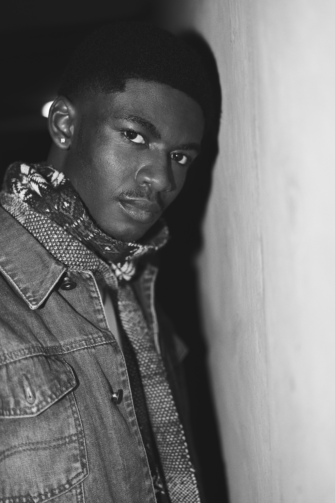

Where expression meets artistry
A collection of intimate, emotion-driven portraits capturing personality, mood, and the stories living behind each look.


I’m an aspiring model passionate about using fashion and photography as a canvas for storytelling. For me, modeling is more than just posing, it is a story keeping record of every momemt of my life, like they say "catching moment". Life as a journey is an embodiment of emotion, style, and character, so in my way i want to captivates the viewer while portraying my developing personality as I grow figure myself every step of the way, according to God's divine leading. I enjoy experimenting with different looks, from high-fashion concepts to natural lifestyle shoots, always bringing energy, creativity, and adaptability to every project. Beyond the camera, I’m committed to continuous growth, learning, and collaborating with brands, photographers, and creatives who share a vision for powerful imagery. My goal is to build a career where each shoot inspires curiosity and leaves a lasting impression. If my work resonates with you, I’d love to connect and explore opportunities together.